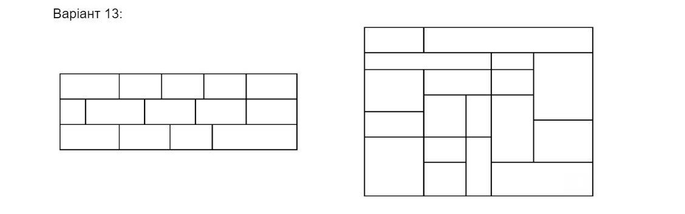

Задания к 4 лабе по Web:
1. index.html и есть 1 заданием.
2. 2d перетворення // виконати в окремому HTML документісьв
- a. створити елемент зі списку ‘triangle down’ (13 mod 7)
- b. над створеною фігурою виконати 2д перетворення ‘rotate’ ({81 + 13} mod 4)
- c. задати часову функцію для анімації ‘erase’ ({group - variant} mod len(С))
- d. тривалість анімації 3 секунди
3. 3d перетворення
- Cтворити прямокутник з розміром 200х200 на виконати над ним перетворення:
- ‘rotateY(45deg)’ ({13} mod 4) (тривалість анімації 2 секунди)
4. Переходи та трансформації
Створити круг діаметром 250px та виконати для нього наступну анімацію переходу
- a. тривалість переходу = {(13 mod 10) / 4} = 0.75
- b. в переході мають участвувати всі поля об’єкта
- c. тип перетворення transform
- d. часова функція перетворення ‘linear’ (13 mod 6 = 1)
5. Анімація з ключовими кадрами (keyframes)
Зробити keyframe анімацію зміни кольору фона прямокутника розміром 200x200px з проміжними
ключовими точками (0, 13, 50, 87, 100) кольори залишаються на ваш розсуд
- a. тривалість анімації {((81 + 13) mod 10) / 4} = 1
6. Комбінування анімацій
- a. На сторінці завдання 6 зробити фігуру з завдання 2, виконати для неї одночасно анімації переміщення зміни кольорів та розміру, вихідні розміри фігури, часові функції та координати переміщення на ваш розсуд
- b. тривалість анімації {((81 + 13) mod 10) / 5} = 0.8
7. Flexbox та CSS-Grid
- На окремій сторінці зробити верстку згідно варіанту.
Перший шаблон зверстати засобами css flexbox, другий зверстати за допомогою css grid.
Кожен прямокутник зафарбувати у окремий колір. Пропорції прямокутників мають зберігатися при зміні розміру екрана.
